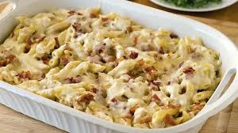

Chicken-Bacon-Ranch Pasta Bake

Discrebtion
This chicken bacon ranch pasta bake is a delicious and easy pasta bake that is full of bacon ranch flavor.
ingredients
- 1 (16 ounce) package farfalle (bow tie) pasta
- half cup of unsalted butter
- 1 (8 ounce) package cream cheese, cubed
- 2 tablespoons ranch dressing mix
- 2 cups milk
- 1 (8 ounce) package shredded Monterey Jack cheese
- 8 strips cooked bacon, divided
- 2 cooked chicken breasts, shredded
- 1 cup shredded Cheddar Jack cheese
steps
- Preheat the oven to 350 degrees F (175 degrees C). Coat a 9x13-inch baking dish with cooking spray.
- Bring a large pot of lightly salted water to a boil. Cook bow-tie pasta at a boil, stirring occasionally, until tender yet firm to the bite, about 12 minutes.
- Meanwhile, melt butter in a saucepan over medium heat. Add cream cheese and ranch mix; whisk until smooth. Slowly whisk in milk. Stir in Monterey Jack; cook until melted and sauce thickened, 5 to 10 minutes. Crumble in 6 strips bacon; stir to combine.
- Combine pasta and chicken together in a large bowl. Pour in sauce and mix until well combined; transfer to prepared baking dish. Sprinkle on Cheddar Jack; crumble remaining 2 strips bacon on top.
- Bake in the preheated oven until cheese melted, about 20 minutes.